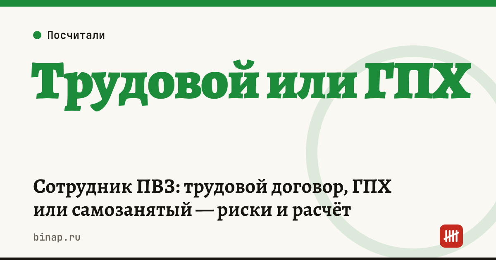

Сотрудник ПВЗ: трудовой договор, ГПХ или самозанятый — риски и расчёт

Пункт выдачи работает по графику площадки, сотрудник выдаёт заказы по правилам владельца и получает фиксированную оплату за смену. Это почти полный набор признаков трудовых отношений. Поэтому оформить такого сотрудника как самозанятого или по договору подряда можно, но рискованно. Ниже — сравнение трёх вариантов и расчёт стоимости для владельца ПВЗ.
Коротко
- Трудовой договор — самый дорогой вариант на бумаге, но без риска переквалификации.
- Договор ГПХ с физлицом: НДФЛ и взносы платит владелец, а при работе по графику с фиксированной оплатой это по сути трудовые отношения.
- Самозанятый: налог платит сам исполнитель, но график, правила и фиксированная оплата делают схему уязвимой для проверки.
- Нанимать самозанятым своего бывшего работника в течение двух лет после увольнения нельзя: такой доход не облагается налогом на профессиональный доход.
- Посчитайте полную стоимость сотрудника и заложите её в окупаемость точки.
Сроки, изменения и разборы для ИП и самозанятых — каждое утро в Telegram и MAX. Подпишитесь, чтобы не пропустить.
Три варианта оформления
| Трудовой договор | Договор ГПХ | Самозанятый | |
|---|---|---|---|
| НДФЛ 13% | удерживает владелец | удерживает владелец | нет, исполнитель платит 6% с доходов от ИП и компаний |
| Страховые взносы | платит владелец | платит владелец (кроме травматизма, если не указано в договоре) | нет |
| Отпуск, больничный | есть | нет | нет |
| График и подчинение | законно | признак трудовых отношений | признак трудовых отношений |
| Риск доначислений | нет | есть | высокий |
Расчёт: сколько стоит сотрудник в месяц
Расчёт редакции. Оклад сотрудника — 40 000 ₽ в месяц. ИП на УСН — субъект МСП с тарифом 30% в пределах 1,5 МРОТ (в 2026 году МРОТ — 27 093 ₽, 1,5 МРОТ — 40 639,5 ₽). Взносы на травматизм — 0,2% (класс риска зависит от основного ОКВЭД).
| Трудовой договор | Самозанятый | |
|---|---|---|
| Выплата сотруднику | 40 000 ₽ (на руки 34 800 ₽) | 40 000 ₽ |
| Страховые взносы 30% | 12 000 ₽ | — |
| Взносы на травматизм 0,2% | 80 ₽ | — |
| Итого расходы владельца | 52 080 ₽ | 40 000 ₽ |
Разница — 12 080 ₽ в месяц, около 145 000 ₽ в год (расчёт редакции). Но если проверка признает отношения трудовыми, владельцу доначислят НДФЛ и взносы за весь период, пени и штраф — экономия за год может превратиться в долг больше неё.
На УСН «доходы минус расходы» зарплата и взносы уменьшают базу налога, а на УСН «доходы» взносы уменьшают сам налог. Учтите это в расчёте: в калькуляторе окупаемости ПВЗ зарплату ставьте полной стоимостью, с взносами.
Как снизить риски
- Сотрудник на постоянный график — по трудовому договору. Это честный и самый спокойный вариант.
- Подработка в выходные или подмена — договор с самозанятым на конкретный объём: число смен по заявке, оплата по актам, без подчинения внутреннему распорядку. Что меняется для работы с самозанятыми — в статье Правило 60 часов.
- Не переводите действующих сотрудников в самозанятые — это первый повод для проверки.
- Заложите сотрудника в план точки. Формула окупаемости и пример — в статье Окупаемость ПВЗ: формула и пример, все материалы — в разделе ПВЗ.
Частые вопросы
Можно ли оформить сотрудника ПВЗ как самозанятого? Формально можно, но если он работает по графику, по вашим правилам и за фиксированную оплату, налоговая может признать отношения трудовыми.
Сколько стоит сотрудник с окладом 40 000 ₽? В нашем примере для МСП на тарифе 30% — около 52 080 ₽ в месяц с взносами (расчёт редакции).
Можно ли взять самозанятым бывшего сотрудника? Можно, но два года после увольнения его доход от вас не облагается налогом на профессиональный доход — платить придётся как с работником.